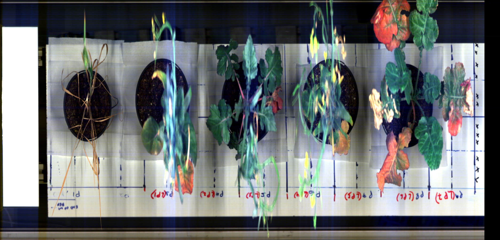
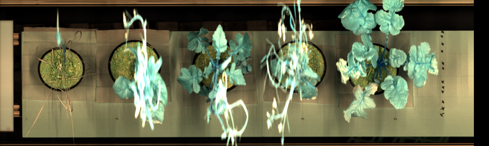
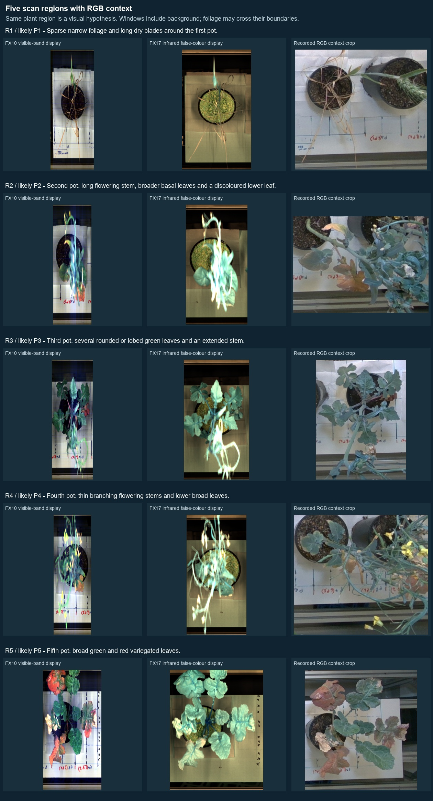
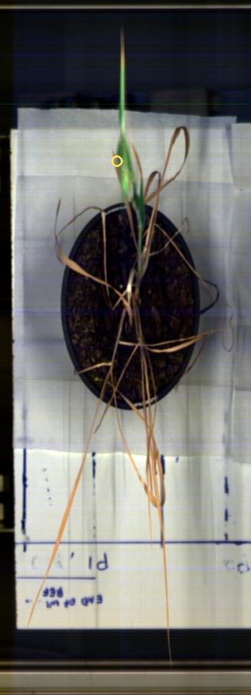
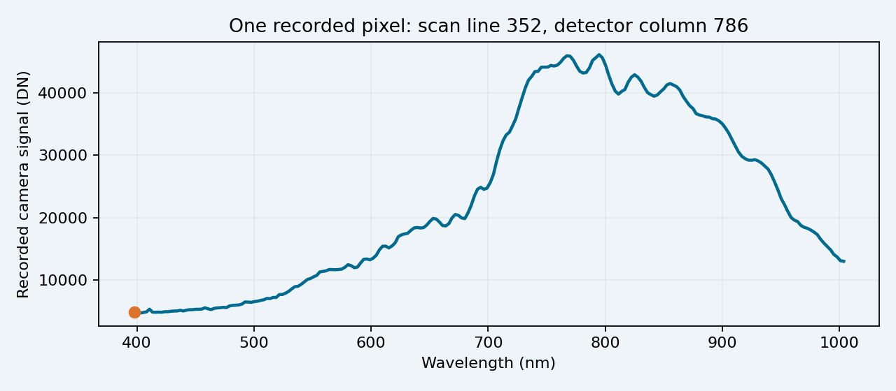
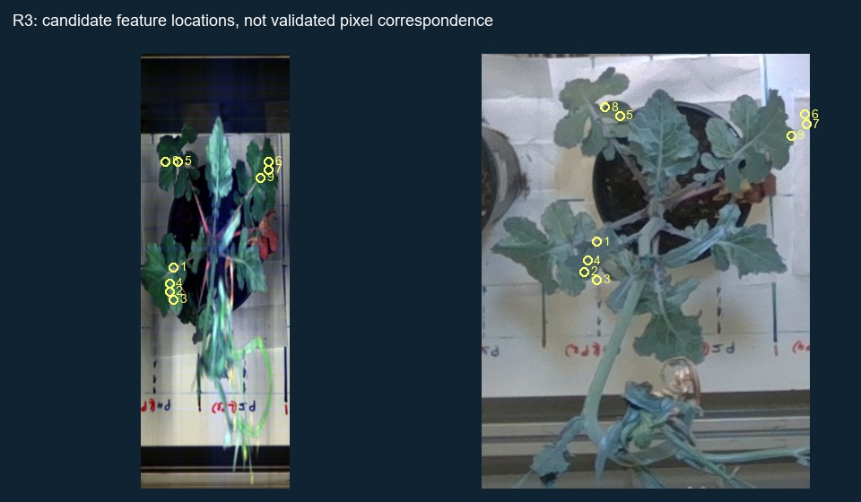

01 · The result we can show
See the full plant scan.
Inspect the light measured at any pixel.
The earlier viewer showed small selected patches. This presentation restores the surrounding plant scene for both spectral cameras, so the measurements have visible context.
Five scan-order plant regionsFX10 + FX17224 bands per cameraOriginal recorded pixels
“Whole scan” means the complete recorded 2D image. It does not mean every surface of every leaf was visible, or that all pixels have verified 3D positions.
Explore the full scans
02 · What the cameras measured
A colour camera has three channels. Each spectral camera has 224.
| Camera | Recorded wavelengths | Recorded image size |
|---|
| FX10 | 397.66–1,003.81 nm
Visible light and nearby infrared | 2,127 scan lines × 1,024 detector columns |
| FX17 | 935.61–1,720.23 nm
Infrared, extending into short-wave infrared | 2,127 scan lines × 640 detector columns |
At one image pixel, there are 224 recorded numbers. Plotting those numbers against wavelength produces that pixel’s spectrum.
The cameras record lines as the scan moves. The data has two image directions plus wavelength. It does not contain the leaf’s X, Y and Z coordinates.
These sizes and wavelengths are read from this recording’s source headers. The two cameras remain separate; their raw readings are not interchangeable.
03 · The missing context is now visible
These are the full recorded scenes.

FX10: a display made from bands near 660, 550 and 470 nm. Colours are stretched to reveal the scene.
FX17: false colour from bands near 1600, 1300 and 1050 nm. These colours are assigned for display; they are not the plant’s visible colours.Across the image is the scan-line sequence. From top to bottom is detector position, reversed for this rotated display. The five pots provide a clear guide to the scene.
The scene includes plant tissue, soil, pots, table and references. “Click anywhere” does not mean every clicked pixel is a leaf. Some leaves also overlap, lean across region boundaries or extend beyond the image edge.
04 · Which plant am I looking at?
Compare each scan region with recorded RGB context.
The pot order and broad plant shapes support these associations. They help us recognise the plant region; they do not prove a precise match between every spectral pixel and RGB pixel.
 FX10 spectral display
FX10 spectral display FX17 infrared false-colour display
FX17 infrared false-colour display RGB context crop · open full recorded image
RGB context crop · open full recorded imageR1–R5 are browsing regions in scan order, provisionally associated with RGB-D P1–P5. These are not operator-confirmed manual specimen or leaf labels. The window boundaries are not plant outlines.
Show all five regions together

05 · What does clicking a pixel tell us?
One location. One complete spectrum.

The yellow circle marks FX10 scan line 352, detector column 786. The circle is enlarged to see it; it is not the measured footprint.
Horizontal: wavelength. Vertical: camera signal. This graph belongs to that single marked pixel, not the whole plant.At 397.66 nm, this pixel recorded 4,880 DN. “DN” simply means the numerical camera reading. The curve shows this pixel’s readings across all 224 recorded bands.
Click a different visible leaf location and compare its curve. Different curves can be explored, but raw brightness alone does not establish plant health, chlorophyll or water content.
06 · What the wavelength slider does
It selects one measurement from every pixel.
Move the wavelength slider
Ask: “What did the camera record at this wavelength across the scene?” The image changes to display those values.
Click a different pixel
Ask: “What is the complete spectrum at this particular location?” The graph changes to that pixel’s 224 values.
Use the camera selector to repeat the inspection in FX17. Its wavelengths, view and detector positions differ. The same screen coordinate does not automatically identify the same leaf spot across cameras.
Display colours and brightness are scaled to make values visible. Read the numerical values and display range. A yellow or bright pixel does not mean “healthy,” and differently stretched previews cannot be compared as absolute reflectance.
07 · What RGB matching adds
Recognising the plant is easier than proving the exact leaf spot.
1. Spectral pixel
224 measured light readings
→2. Matching RGB spot
UNCERTAIN FOR MANY PIXELS
→3. Existing 3D point
Attach the spectrum to its position
RGB side-by-side context supports step 2 at the plant or broad-leaf level. Precise 3D fusion needs reliable matching at the individual spot level.

Example: feature-match candidates on R3 / P3. Their cross-view geometric consistency is encouraging, but these numbered locations are not independently verified physical correspondences.The existing partial 3D demonstration has 2,338 FX10 and 862 FX17 measurements on parts of two upper Plant 5 leaves. Those placements remain approximate. The whole-scan viewer exposes far more recorded spectral data without pretending it all has 3D matches.
08 · A clear tutor demonstration
Show the measurement, then its limits.
- Open the full FX10 scene and point out the five pots.
- Select a plant region and show its RGB context.
- Click inside a clearly visible leaf. Explain that the graph is one pixel across 224 wavelengths.
- Move the wavelength slider. Explain that the image now compares pixels at one selected wavelength.
- Switch to FX17 and repeat. Keep its raw values separate from FX10.
- Show the optional matching evidence as tentative. Distinguish it from verified 3D assignment.
“We can now inspect the complete recorded spectral scenes from both cameras, rather than only disconnected sample patches. We can see the five scan-order plants and examine recorded spectra at visible image locations. RGB images provide plant context. Precise spectral-to-3D matching is still partial, and incomplete white/dark-reference information limits calibrated reflectance and physiological claims.”
Keep these three limits visible: hidden or off-camera tissue was not recorded; plant and leaf labels require review; raw DN is not calibrated reflectance. Do not report a whole-plant health score from these displays.
Start the interactive demonstration